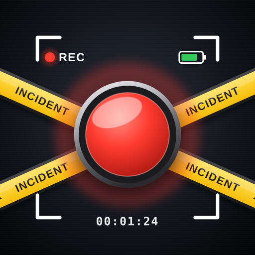

Incident Recorder by Leonera
Builds Ad Hoc para instalar desde Safari
Cómo instalar
- Abre esta página en Safari en el iPhone (registrado en la cuenta de Apple Developer).
- Toca Instalar y confirma.
- Si iOS lo pide, activa Ajustes › Privacidad y seguridad › Modo de desarrollador.
Si el iPhone no está registrado la instalación falla: registra su UDID en el portal de Apple Developer y vuelve a hacer push para generar un build que lo incluya.
Todos los builds
build-9-6e648cePre-release
0.2.0 · rama
claude/kind-faraday-qrpukz · 6e648ce · 2026-10-18T02:28:35+00:00build-8-4172593Pre-release
0.2.0 · rama
claude/kind-faraday-qrpukz · 4172593 · 2026-10-17T20:44:50+00:00build-7-59e2307Pre-release
0.2.0 · rama
claude/kind-faraday-qrpukz · 59e2307 · 2026-10-17T02:23:17+00:00build-6-7dd6388Pre-release
0.2.0 · rama
claude/kind-faraday-qrpukz · 7dd6388 · 2026-10-17T01:19:40+00:00build-4-94a82edPre-release
0.1.0 · rama
claude/beautiful-pasteur-5libll · 94a82ed · 2026-10-17T00:04:05+00:00